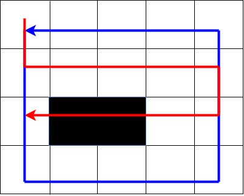
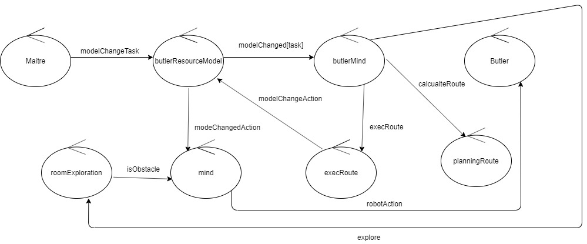
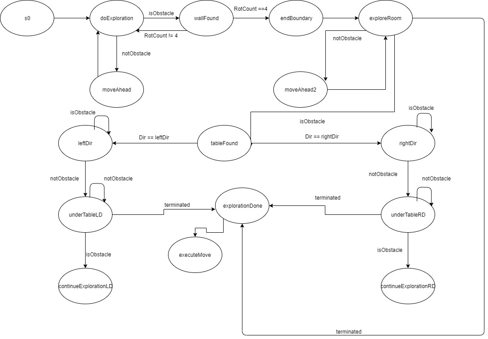
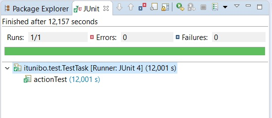

Requirements
Nello SPRINT1 verrano implementati i seguenti punti:
- Mappatura della stanza
- Implementazione del planner
Requirements analysis
Il primo requisito da soddisfare in questo sprint, non è esplicitamente espresso tra i requisiti forniti dal committente, va considerato come un requisito funzionale, necessario al funzionamento del sistema. Nulla vieta di tralasciarlo ed assumere che la mappa della stanza venga fornita dall'esterno prima dell'avvio dell'applicazione, ma questo andrebbe a limitare la portabilità del sistema. Per soddisfare questo requisito è necessario chiarire vari aspetti:- Rappresentazione della stanza
- Modalità di esplorazione
Problem analysis
Per mappare la stanza è necessario fornire al Butler una rappresentazione della stessa. Questa rappresentazione deve essere fornita in modo tale che il Butler sia in grado di muoversi in essa secondo una qualche unità di misura. Come unità di misura è stata scelta la dimensione del Butler, quini la stanza viene suddivisa in una matrice in cui ogni cella ha le dimensioni del Butler.Sarà necessario successivamente calcolare il tempo che impiega il Butler per passare da una cella ad un'altra, tale tempo sarà sfruttato nell'esecuzione delle mosse necessarie al raggiungimento di una data posizione sulla mappa.
Metodologia di esplorazione della stanza
Da requisiti il tavolo non è attaccato alle pareti, quindi una possibile soluzione nell'esplorazione della stanza potrebbe essere la seguente:- Si esplora inizialmente il contorno.
- Si esplora via via la stanza a "spirale" riducendo ogni volta la dimensione del contorno, una volta incontrato il primo ostacolo, se ne percorre il contorno e si ritorna nella posizione RH una volta terminato.
Una strategia alternativa e più efficiente è la seguente:
- Si esplora il contorno.
- Una volta ritornati al punto di partenza, si esplora la stanza in orizzontale.

Appena si incontra l'ostacolo, si salva la posizione, si percorre il perimetro dell'ostacolo e, non appena si raggiunge nuvamente la posizione salvata precedentemente, l'esplorazione termina.
L'architettura logica del sistema è la seguente:

FSM ExploreRoom
Progettazione
In questo sprint sono stati creati:- resourceModelButler.pl
- QActor ExplorationRoom
Testing
Esecuzione testTask

Esecuzione testAction
Esecuzione testObstacle